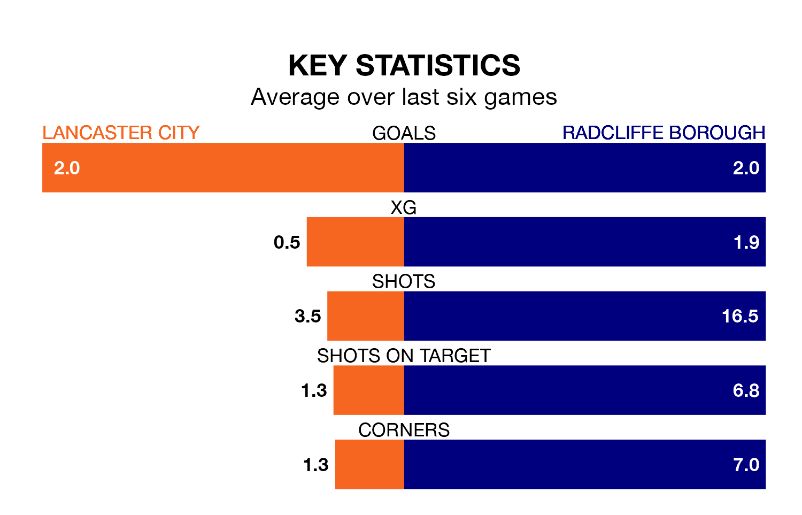

Radcliffe Borough face a challenge to maintain their high-scoring form away against a tight Lancaster City defence on Tuesday.
With 62 goals in 22 games, Radcliffe are the top scorers in Northern Premier League ahead of the 7.45pm kick-off at Giant Axe.
They face a Lancaster side who have scored 35 in 23 matches, but conceded only 29 goals, putting them joint-fourth among the league's tightest defences – only Rylands, Worksop Town and Macclesfield have conceded fewer goals.
Radcliffe are top of the table after 22 games, of which they have won 17 and lost five, earning 51 points.
Lancaster are 10 places behind Borough in 11th, with 10 wins and six draws putting them on 36 points.
City are in good form in Northern Premier League, with four wins and a draw from their last six games.
With three wins and three losses over that period, the Boro's form is worse – they have taken nine points from 18, compared to the home side's 13.
In the last three years, Lancaster and Radcliffe have played each other on five occasions. Lancaster won one of them, Radcliffe two, and they drew twice.
On average, Lancaster scored 1.2 goals and the Boro 1.8 in those matches.
Their last meeting was on August 15, when Radcliffe won 4-2 at home.
Lancaster's last match was on Saturday, a 2-1 win against Macclesfield.
Radcliffe beat Workington 3-1 last time out, also on Saturday.
Updated: 15:34, 08/01/24